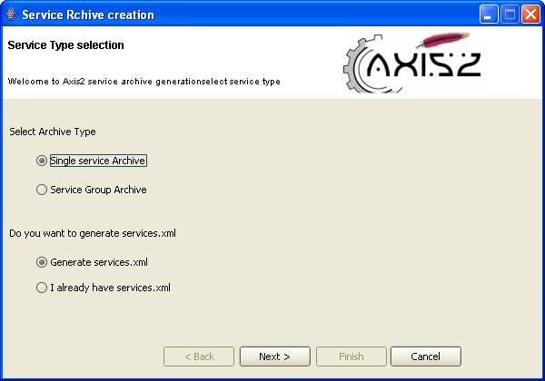
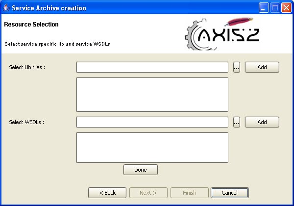
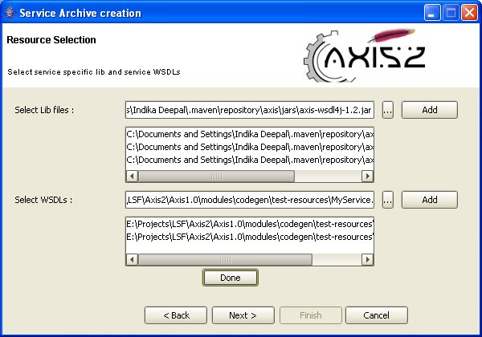
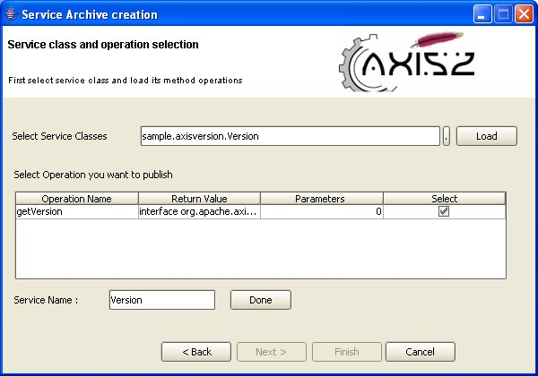
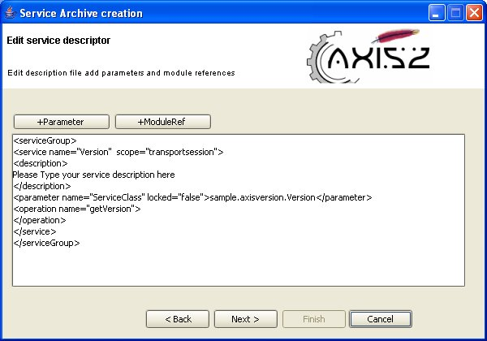

This document explains installation and usage of IDEA code generation plug-in.
First download the plug-in link which is a zipped file, and extract that into plugins directory in IDEA installation directory or plugins directory in user directory (usre/idea/conf/plugins). If you have correctly extracted the file you would see a directory called Axis2 in which there should be only one directory called lib containing a few of .jar files.
Next step is to restart IDEA so that the changes can take place. If the plug-in has been installed correctly, when you restart IDEA you will see following icons in IDEA .

Also if you right-click on editor page of IDEA you would see a link for the same plug-in.

When you click on either one of them a window will appear asking you to select one of the following two options.

Select WSDL2Java codegenaration and click OK to generate code from a WSDL file. Then the following window will appear.

To move on to the next page the WSDL file location must be given. The 'browse' button can be used to easily browse for a file rather than typing the whole path.
Once the WSDL file is selected, codegen options are to be selected. By far this is the most important page in this wizard, which determines the characteristics of the code being generated. Novices need not worry about these options since the most common options are defaulted. Advanced users will find it very easy to "turn the knobs" using these options.

Output language can be Java, C#. But we have not fully tested C# codegenration therefore it is better to select Java as output language.
Since Axis2 supports both synchronous and asynchronous client programming model, the tool has provided a way to select this option.
The default data binding type is adb (Axis2 data binding). Although the tool is capable of providing XML beans, due to class loading issues in XML beans current implementation only generate code with OM and adb.
As for the package name of the generated code, you can set the name you want.

You can simply browse and select the output location or the location in which the code is to be generated. You do not need to type.

If everything has gone well you will see the above message.
First step is to click on Axis2 IDEA plug-in icon and select 'create a service archive' radio button.

Then a wizard below will appear asking to select archive type

In Axis2 user can deploy single service or service group. Therefore you can select either single service archive or sevice group archive for archive type you want to create.
If you already have services.xml you can skip some of the steps in the wizard by selecting 'I already have services.xml' and clicking on next. If you do not have service.xml, select radio button 'Generate service.xml' and click on next, the tool will create services.xml for you.
Depending on the options you selected on this wizard page there can be three sub wizards:
1 & 2 follow the same set of steps except some looping mechanism inthe middle of the wizard.
From the following page you have to select the location of classes directory, where you compile output location. You do not need to type it, simply browse and select.

When you click on next button, wizard will move to the page where you select service specific external libraries and service WSDL file. In the case of service group you can add any number of WSDL files depending on the services in the service group. If you want to add multiple WSDL files to a single service type you can do that as well.

To Add libraries first click on small (...) button to browse for library file and then click on Add button. Once added the selected file will appear in the list box.
To add WSDLs first click on small (...) button to browse for WSDL file and then click Add button to add the file to the list.

Next page allows you to select service implementation class. In the case of service group, same page will be looped to select multiple service implementation classes.
The following steps achieves this task:
Step 1:
Select a service implementation class by browsing and click on Load button to load all the public methods in that class, after which you can select the methods that you want to publish using the check boxes.

In service name text box you can type the name of the service you want, but remember that service name should be across the system.
When you have completed this particular service click Done. In the case of a service group when you click Done button on the particular service the following dialog will appear with option of to adding some more service(s) to service group.

If you click Yes , you have to follow the same procedure to add some other service(s) to service group.
If you click No, Next button will enable and you can go to next page.
Note: From this point onwards the steps are similar to all the sub wizards.

This page displays the services.xml file, either the one given by you (in the case of “I already have services.xml”) or the one generated by the system (in the case of "generate services.xml")
This page is editable and provide a way to add parameters and module references to any level.
Note : When you click on either +Parameter or +ModuleRef buttons remember that corresponding texts will be added to the current mouse position. Therefore click on the location you want to add the parameter or module references and then click relevant button.
If you click on the +Parameter button a window will appear asking to give parameter name and parameter value.

Or you can manually add parameters to any where in the document as you wish.
Like wise adding module references can be done by clicking on +ModuleRef button in the page. You have to type the name of the module to be engaged as in the following figure.

When you complete this page press the Next button to go to final page.

Next step is to select output location, the location in which archive file should be created.
In the Archive Name, type the name of the archive file you want to place. This name will finally become the service group name.
Note : Do not include file extension when you type archive name. System will generate that for you.
When you are done, click the Finish button. If everything has been done successfully you will see following message.

In the case where services.xml is already available, the steps are as follows,

This page allows you to select both location of services.xml and the location of classes directory. Click select buttons and browse the file system to find required document and location.
Click on Next button which will take you to a page which allows you to edit services.xml in the same manner as described in edit service descriptors in sub wizards 1 & 2.